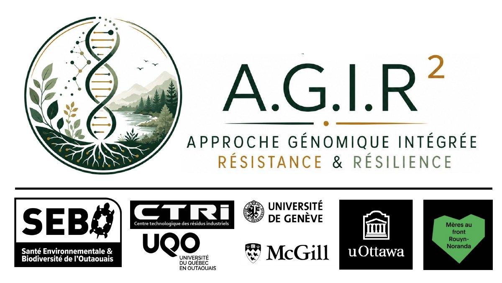
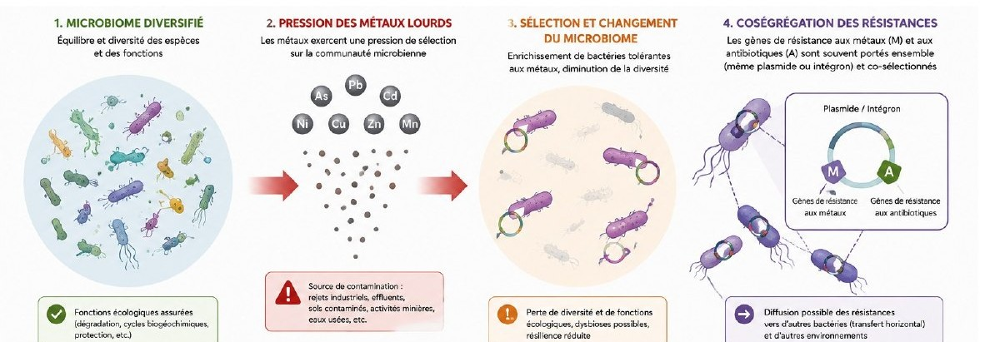
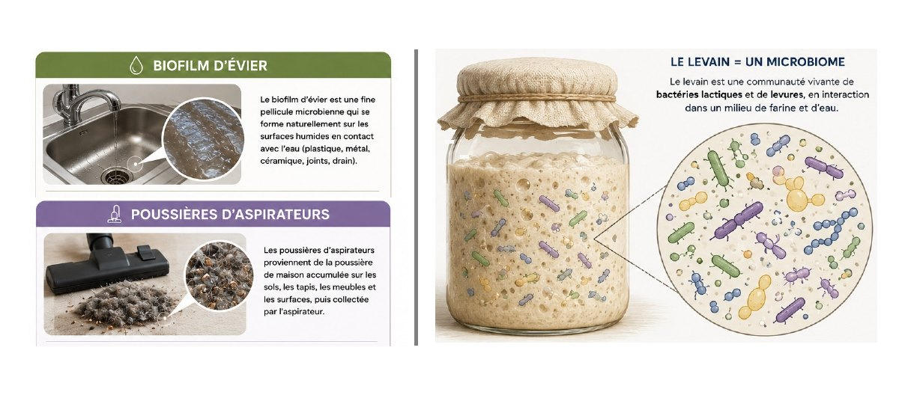

Recherche · Projet de recherche phare
2026-2029 · Santé environnementale
A.G.I.R.²
Approche génomique intégrée, résistance et résilience
Lire la santé de nos milieux de vie dans l'ADN des micro-organismes qui les habitent.

La question
Nous passons l'essentiel de notre temps à l'intérieur : à la maison, à l'école, au travail. Évaluer la qualité de l'air et du sol de ces milieux, et leur degré de contamination, coûte cher. Or le microbiome joue un rôle intégrateur : il réagit à l'ensemble des conditions de son milieu. Peut-il nous donner une vue d'ensemble de la qualité environnementale des bâtiments où nous vivons ?
Le concept : l'adaptome
Plutôt que d'inventorier les espèces présentes, A.G.I.R.² mesure ce que les micro-organismes font pour s'adapter à leur milieu. L'ensemble des gènes qu'une communauté mobilise pour résister à un stress, comme les métaux lourds ou les antibiotiques, forme son adaptome. Des gènes de résistance à l'arsenic qui s'enrichissent signalent la présence probable d'arsenic.

Le plus petit espace génomique informatif
Séquencer tout l'ADN d'un échantillon coûte cher et produit beaucoup de données. A.G.I.R.² cherche le plus petit ensemble de gènes qui suffit à renseigner sur la qualité d'un bâtiment : quelques marqueurs bien choisis plutôt que des milliards de lettres. C'est la condition pour rendre cette surveillance accessible et abordable.
Qui est là ?
Un seul gène marqueur, l'ARN ribosomique 16S, identifie les bactéries présentes. Peu coûteux, mais il ne dit pas ce qu'elles font.
Qu'est-ce qui circule ?
Les éléments génétiques mobiles, comme les plasmides et les intégrons, s'échangent entre bactéries et portent souvent les gènes de résistance aux métaux et aux antibiotiques : des signaux d'adaptation ciblés.
Que peuvent-ils faire ?
Tout l'ADN de l'échantillon : qui est là et l'ensemble de ses fonctions. La lecture la plus complète, mais aussi la plus coûteuse et la plus volumineuse.
A.G.I.R.² compare ces trois lectures pour trouver celle qui renseigne le mieux sur la qualité d'un milieu, au moindre coût.
Rouyn-Noranda, un cas d'étude
Rouyn-Noranda, où la Fonderie Horne est active depuis près d'un siècle, est un exemple probable de contamination par les métaux lourds. Le microbiome de ses maisons et de ses écoles permet-il de la voir ? Les résultats seront comparés à ceux de Gatineau.
Trois volets
1 · Lire
Le microbiome de nos bâtiments révèle-t-il leur exposition aux contaminants ?
Lire l'adaptome de 100 foyers et six écoles : poussières, biofilms et levains, séquençage Nanopore et analyses chimiques.
2 · Participer
Comment les citoyens peuvent-ils produire et utiliser ces données ?
Du primaire au cégep, autour du levain sentinelle ou en développant des biosenseurs qui détectent les marqueurs génétiques d'adaptation microbienne, liés par exemple à la pollution par les métaux.
3 · Agir
Cette démarche développe-t-elle le pouvoir d'agir des jeunes ?
Mesurer l'effet sur l'agentivité des jeunes et sur leur capacité d'action.

Avec les citoyens
Les résultats reviennent d'abord aux résidents et aux écoles qui ont fourni les échantillons, sous une forme qu'ils comprennent et en laquelle ils ont confiance.
Nous espérons qu'A.G.I.R.² fera émerger à Rouyn-Noranda une communauté citoyenne d'innovation semblable à l'École de l'innovation, autour de notre partenaire Strate (anciennement CTRI) et des cochercheuses du projet, Isabelle Vachon, Selma Etteieb et Émilie Robert.
L'équipe
Chercheuse principale : Stéphanie Pontier (Centre SEBO, Cégep de l'Outaouais).
Cochercheurs : Selma Etteieb, Isabelle Vachon et Émilie Robert (Strate, anciennement CTRI) ; Yann Surget-Groba (UQO, ISFORT).
Collaborateurs : Ann Lévesque (Université de Genève), Jérôme Waldispühl (Université McGill), François-Xavier Campbell-Valois (Université d'Ottawa), Charles-Antoine Bachand (UQO), Mères au front Rouyn-Noranda, ainsi que Catherine Hallé, Nabil Ketata, Bilal Manaï et Jean-René Hickey (Centre SEBO) et Frédérique Marcotte (Cégep de l'Outaouais).
Et surtout : les citoyens de 9 à 99 ans de Rouyn-Noranda et de Gatineau.
Un projet de recherche en tête ?
Terrains, écoles partenaires, jeunes chercheurs motivés : parlons de votre projet.